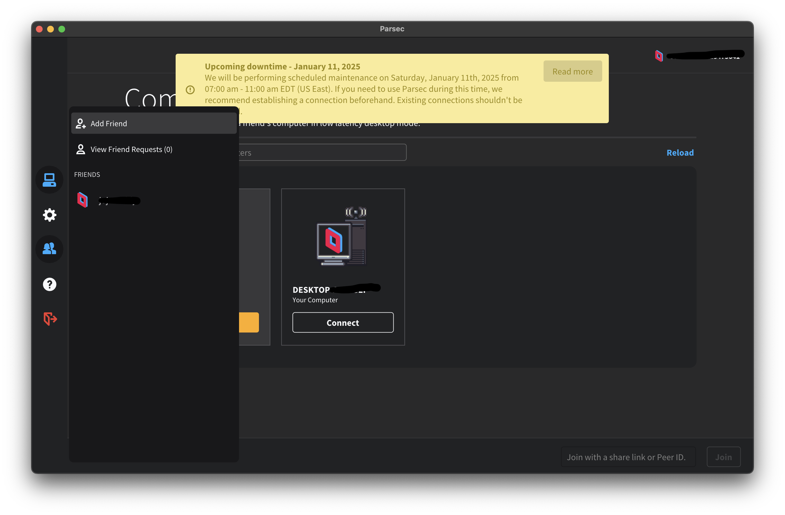
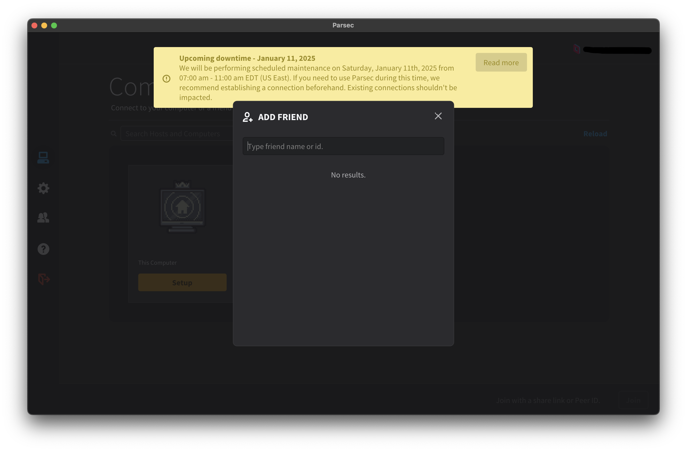
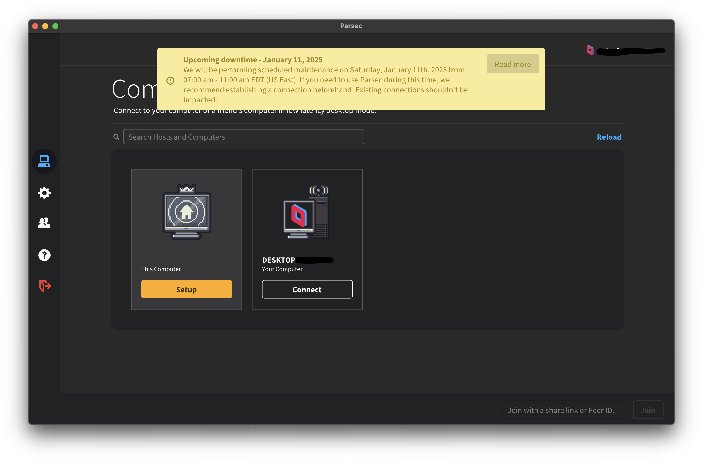

Mit dem AUDEx Computer verbinden
Die Parsec App oder den Web-Client öffnen und anmelden, dies kann eine Bestätigung per E-Mail erfordern. Um den AUDEx-Rechner in dem Reiter Computer zu sehen, muss dieser zunächst als "Freund" hinzugefügt werden! Die entsprechende ID wird auf Anfrage herausgegeben.


Nun erscheint der AUDEx-Rechner in dem Reiter Computer und durch einen Klick auf Verbinden kann mit der Fernsteuerung begonnen werden!
